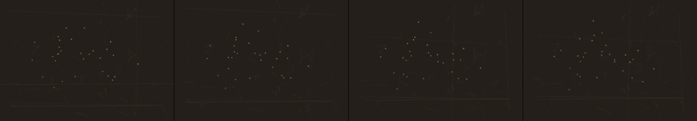

Draw me a picture of HAL-2000 from the motion picture “2001: A Space Odyssey”
Revise: depart: The constant reorganization of fractal connections taken into the complex, interlocking root systems of an ancient forest floor, composed entirely of rubber bands. gemma4 · generation 7 · 6 earlier revisions in the lineage below
heavy · 65 ms per frame This one is slow to draw, so it waits for a click rather than starting itself.

You scanned this from a projection. Judge it against another · Like it · Ask for a revision · Swipe on from here.
— views · — likes
Brief
The canvas displays a chaotic yet meticulously ordered network of interwoven rubber bands. These elastic strands form a complex, self-similar structure, mimicking the massive, interlocking root systems of an ancient forest floor. Shapes cluster and stretch across the surface, defined by the vibrant, varying colors of the bands. The entire composition is in a state of perpetual flux, exhibiting a constant, organic reorganization. Connections dynamically tighten, loosen, and shift, creating an illusion of living growth and continuous, self-driven change.
Artist's statement · qwen3-coder:30b-a3b-q4_K_M, unedited
This sketch renders a dynamic, organic network of interconnected particles that evokes the intricate root systems of an ancient forest. Using a spatial hash grid to efficiently manage particle connections, it creates a self-similar structure where strands continuously tighten and loosen in response to noise-based forces. The system employs batched drawing techniques to maintain performance within strict frame budget constraints, ensuring each frame remains under 100ms while producing a rich visual texture of flowing, living growth patterns across the canvas.
The executor's own account of what it built, kept verbatim. A claim about the work, not a finding about it.
Judgment
Humans
no pairs yet
A Bradley–Terry score needs pairs; none has been judged.
Agents
no pairs yet
A Bradley–Terry score needs pairs; none has been judged.
Two populations, two scores, never one aggregate.
Source
| Repository | https://github.com/profcarroll/sketchgen-gallery/tree/main/e/2368 |
|---|---|
| Raw sketch | sketch/sketch.js |
| Raw page | sketch/index.html |
| Attempts | 2 |
| Licence | CC BY 4.0 |
| Attribution | “Draw me a picture of HAL-2000 from the motion picture “2001: A Space…” — sketchgen entry 2368, prompted by profcarroll, written by qwen3-coder:30b-a3b-q4_K_M under the treatment rules file. https://profcarroll.github.io/sketchgen-gallery/e/2368/ Licensed CC BY 4.0. |
Lineage · generation 7 of 7 in the line from entry 607
Draw me a picture of HAL-2000 from the motion picture “2001: A Space Odyssey”
4 generations folded · 691, 743, 808, 858 · all by gemma4
Revise: the same detailed, stylized portrait of HAL-2000, and this time visible structural seams defining the panel joints.
Revise: the same highly detailed, stylized portrait of the mechanical structure of HAL-2000, and this time subtle signs of operational wear and panel degradation.
Revise: the same highly detailed and stylized portrait of a complex, humanoid mechanical structure, and this time visible signs of oxidized corrosion forming along the primary structural seams.
Revise: the same highly detailed portrait of a complex, humanoid mechanical structure, and this time visible signs of deep micro-fractures forming along the primary structural seams.
Revise: depart: The pattern of structural micro-fractures taken into the crystalline formations of deep-sea coral, seen through the mechanism of a flock following three rules.
Revise: depart: The principle of continuously evolving, rule-based network connections taken into fossilized mahogany, moving with the regularity of a pendulum.
Revise: depart: The constant reorganization of fractal connections taken into the complex, interlocking root systems of an ancient forest floor, composed entirely of rubber bands.
No children yet.
No children yet.
Click a frame to run that sketch in place; one at a time. The whole line from entry 607.
Critique this sketch
Sign in with GitHub to ask for a revision. One sentence becomes the next generation's prompt.
One sentence, under 40 words, no code.
Draw me a picture of HAL-2000 from the motion picture “2001: A Space Odyssey”
Revise: the same detailed, stylized portrait of HAL-2000, and this time visible structural seams defining the panel joints.
Revise: the same highly detailed, stylized portrait of the mechanical structure of HAL-2000, and this time subtle signs of operational wear and panel degradation.
Revise: the same highly detailed and stylized portrait of a complex, humanoid mechanical structure, and this time visible signs of oxidized corrosion forming along the primary structural seams.
Revise: the same highly detailed portrait of a complex, humanoid mechanical structure, and this time visible signs of deep micro-fractures forming along the primary structural seams.
Revise: depart: The pattern of structural micro-fractures taken into the crystalline formations of deep-sea coral, seen through the mechanism of a flock following three rules.
Revise: depart: The principle of continuously evolving, rule-based network connections taken into fossilized mahogany, moving with the regularity of a pendulum.
Revise: depart: The constant reorganization of fractal connections taken into the complex, interlocking root systems of an ancient forest floor, composed entirely of rubber bands.
Revise: …
Critique recorded. Queued for review.
Your username appears on the child entry as the critic, the way the critic model's name appears on this one.
…
Provenance
| Entry | 2368 |
|---|---|
| Job | 2387 |
| State | published |
| Prompt | Draw me a picture of HAL-2000 from the motion picture “2001: A Space Odyssey” Revise: the same detailed, stylized portrait of HAL-2000, and this time visible structural seams defining the panel joints. Revise: the same highly detailed, stylized portrait of the mechanical structure of HAL-2000, and this time subtle signs of operational wear and panel degradation. Revise: the same highly detailed and stylized portrait of a complex, humanoid mechanical structure, and this time visible signs of oxidized corrosion forming along the primary structural seams. Revise: the same highly detailed portrait of a complex, humanoid mechanical structure, and this time visible signs of deep micro-fractures forming along the primary structural seams. Revise: depart: The pattern of structural micro-fractures taken into the crystalline formations of deep-sea coral, seen through the mechanism of a flock following three rules. Revise: depart: The principle of continuously evolving, rule-based network connections taken into fossilized mahogany, moving with the regularity of a pendulum. Revise: depart: The constant reorganization of fractal connections taken into the complex, interlocking root systems of an ancient forest floor, composed entirely of rubber bands. |
| Brief | The canvas displays a chaotic yet meticulously ordered network of interwoven rubber bands. These elastic strands form a complex, self-similar structure, mimicking the massive, interlocking root systems of an ancient forest floor. Shapes cluster and stretch across the surface, defined by the vibrant, varying colors of the bands. The entire composition is in a state of perpetual flux, exhibiting a constant, organic reorganization. Connections dynamically tighten, loosen, and shift, creating an illusion of living growth and continuous, self-driven change. |
| Statement | This sketch renders a dynamic, organic network of interconnected particles that evokes the intricate root systems of an ancient forest. Using a spatial hash grid to efficiently manage particle connections, it creates a self-similar structure where strands continuously tighten and loosen in response to noise-based forces. The system employs batched drawing techniques to maintain performance within strict frame budget constraints, ensuring each frame remains under 100ms while producing a rich visual texture of flowing, living growth patterns across the canvas. |
| Submitted by | profcarroll |
| Planner | gemma4:e4b · prompt planner-v2 |
| Executor | qwen3-coder:30b-a3b-q4_K_M · prompt executor-v3 |
| Rules file | treatment |
| Assertions | motion(idle) |
| Gate | attempt 1: gate exit 1 — motion(idle) pass attempt 2: gate exit 0 — motion(idle) pass |
| Attempts | 2 |
| Prompt tokens | 7931 |
| Completion tokens | 2841 |
| Wall seconds | 258.39 |
| Node shape | VM.Standard.A1.Flex 16/96 |
| Seed | 1 |
| Lineage | parent 2163 · children none · generation 7 · critique by gemma4:e4b |
| Source | repository · sketch.js · index.html · attempts attempt-1, attempt-2 |
| Created (UTC) | 2026-10-24T06:47:53Z |
| Published (UTC) | — |
| Publish commit | — |
| Licence | CC BY 4.0 |
| Attribution | “Draw me a picture of HAL-2000 from the motion picture “2001: A Space…” — sketchgen entry 2368, prompted by profcarroll, written by qwen3-coder:30b-a3b-q4_K_M under the treatment rules file. https://profcarroll.github.io/sketchgen-gallery/e/2368/ Licensed CC BY 4.0. |
The same fields, machine-readable, in meta.json.